第八章、常见问题
- 第八章、常见问题
- 1、枚举失败
- 2、网口连接设备时枚举不到打印机
- 3、连接串口打印机失败
- 4、连接多台打印机打印多种标签如何区分
- 5、开发包是否有日志信息以及存放目录
- 6、打印不全/打印效果大小与预期不符
- 7、打印效果坐标问题
- 8、打印有动作但无内容
- 9、打印数据发送成功但打印机没有动作
- 10、切纸相关问题
- 11、发送数据后打印机面板报“rfid无epc”或指示灯报错
- 12、执行打印PDF时返回"42074112"报错
- 13、执行打印PDF返回“42074113”报错
- 14、执行打印返回“25182210”报错
- 15、执行打印返回“25182213”报错
- 16、执行打印返回“25198597”报错
- 17、执行打印返回“25198604”报错
- 18、执行打印返回“42270720”报错
- 19、加载动态库返回“41992207”报错
- 20、客户程序或demo无法运行
- 21、DSTP2xWebPrtServer.exe报错“开启服务失败”
- 22、设置通讯超时时间建议
- 23、Linux系统下对应架构选择
- 24、Linux系统下查询系统信息
- 25、Linux系统下需要用root用户或权限运行基于SDK的程序来操控USB连接方式的打印机
- 26、Linux系统下打印文本报错
- 27、Linux系统下字体操作流程
- 28、EPC或USER数据写入格式
- 29、读EPC、USER、TID返回的值为“Error!”
- 30、打印RFID标签会打印“作废”字样
- 31、关于锁定标签的注意事项
- 32、微软、UC、QQ、edge、谷歌、猎豹等浏览器跨域问题
- 33、Linux系统编辑模板快捷方式
- 34、编辑模板表格注意事项
- 35、Linux环境USB数据抓取
- 36、JAVA调用返回“不是UTF-8字符串”
1、枚举失败
①请检查打印机是否已正常开机；
② 请检查是否正确使用usb线将打印机和电脑U口连接起来；
③ 请检查打印机与电脑的usb物理连接线是否松脱；
④ 可能是当前SDK尚未支持的新上市产品，请打印自检页并联系工厂技术支持人员协助分析确认；
⑤ 如果当前是网页应用，请查看在客户端上 DSTP2xWebPrtServer.exe 服务是否已启动；
2、网口连接设备时枚举不到打印机
Windows：
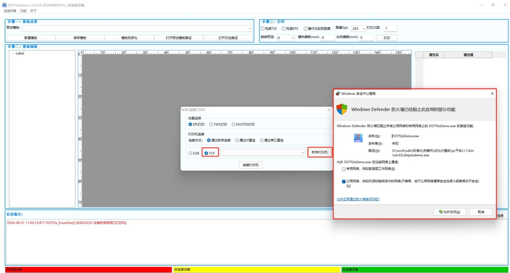
① 请检查打印机是否已正常开机；
② 请检查打印机与电脑、（与电脑组网的）交换机/路由器的网线是否松脱；
③ 请打印自检页，判断打印机跟电脑是否处于同一网段；
④ 请检查电脑是否能ping通打印机；
⑤ 如上图所示，如果Demo 首次在电脑上操作 TCP 枚举打印机，会弹出防火墙阻止程序访问网络断开的弹框，需要允许使用网络的应用程序首次请求使用端口；
Linux：
①请检查电脑是否能ping通打印机；
②国产系统关一下防火墙；相关指令为：
iptables -I INPUT -p udp -j ACCEPT
iptables -I OUTPUT -p udp -j ACCEPT
3、连接串口打印机失败
① 请检查软件与打印机的波特率是否一致，如果不清楚打印机波特率，可以通过打印自检页或者用智能助手连接打印机查看；
② 如果是使用u转串转接板或u转串转接线进行连接的，请确保已正确安装U转串驱动，再进行串口连接操作；
4、连接多台打印机打印多种标签如何区分
多台打印机 USB 连接，如果是不同型号机器，枚举出来的厂商机型会不同；
如果相同型号机器可以用【智能助手】开启 USBID，这时枚举出来的信息会有对应机号信息，该机号信息是唯一，故可通过机号进行区分；
网口连接多台打印机可根据设置的打印IP进行区分；
5、开发包是否有日志信息以及存放目录
具体日志存放路径需要查看对应sdkcfg.xml配置文件里面的 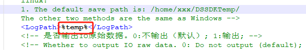 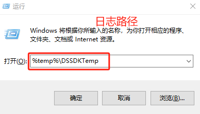
Windwos环境默认路径：
C:\Users\用户名\AppData\Local\Temp\DSSDKTemp\ThermalLog；
也可按下Win＋R键，输入“%temp%”命令，然后回车，找到DSSDKTemp文件夹，里面就是本SDK运行记录的日志；
Linux环境默认路径：
非ROOT模式下，日志是生成在/home/xxx/DSSDKTemp/，若root模式下，日志是生成在/root/DSSDKTemp/下；
日志路径以及等级均可通过依赖库目录下“sdkcfg.xml”文件进行设置修改；
6、打印不全/打印效果大小与预期不符
① 请检查打印机放纸位置是否正确，放纸后有没有用逼纸块固定好纸张；
② 请通过自检页查看当前页长值来确定打印机已正确实施过标签定位；
③ 请检查程序中设置的dpi是否与打印机当前的dpi一致。如果dpi设置比该机器实际dpi大，换算后，打印数据整体会被放大，可能超标签规格，导致打印不全；比如DL-218（203dpi），如果接口中设置为300dpi，代码数据里10mm，打出来实际会变成15mm，打印出来的尺寸会比预期大。应根据打印机的实际DPI（如203dpi）进行正确设置；
④ 请检查打印数据内容或坐标有没有超过标签的大小，模板以及接口参数设置的页长页宽要按实际标签规格设置；
7、打印效果坐标问题
①横坐标问题
检查一下机器放纸位置有没有偏移；
检查打印数据前，有没有调用接口设置页长页宽，因机器有差异，可能计算坐标的起始位置有差异，因此需先按实际打印需求设置页长页宽；
②纵坐标问题
检查一下有没有对标签进行定位校准,可打印自检页看看定位出来的页长是否跟实际标签一样打印（±2mm为正常范围），打印自检页方法：
【DP便携系列】：开机状态下长按走纸键，等待打印自检页；
【DL桌面系列】：关机状态，按走纸键开机，响一声松开手打印自检页；带面板机器可进入测试模式菜单-->>自检打印操作打印自检页；
如果使用黑标纸进行定位，要把传感器改成反射再进行定位；如果是用标签间隙来定位，传感器改成穿透，穿透需要上下传感器都对齐，要移到对着标签间隙的位置再进行定位；如果模式错误，会影响打印出来的纵坐标位置；
批量打印时如果上一张没有打印完成，就发送下一张，导致位置打偏，建议打印流程发送前获取状态（目前版本打印默认同步返回打印状态结果），状态正常情况下，再进行发送下一份数据打印；
8、打印有动作但无内容
① 请检查纸张类型是否使用正确；如使用普通纸张则需安装碳带（DP系列一般只能使用热敏纸）；
② 请检查纸张是否装反了（热敏纸可用指甲划一下表面，会有明显划痕为打印面）；
③ 检查打印内容坐标是否超出标签范围，例如：实际标签规格宽高为40*30，打印文本内容横坐标设置为40mm，那么内容显示超出画布；
④ 批量打印丢数据缺漏乱码，先重启一下打印机清除打印机数据，数据不要一次发送太多或多份数据不要发送太快；建议批量打印流程：每份数据发送前先轮询获取状态，判断状态正常（有纸、联机、设备不忙、缓存空无其它报错等状态情况下，再进行发送下一份数据打印；
9、打印数据发送成功但打印机没有动作
①检查打印机仿真模式与发送的仿真是否一致；
②检查打印机是否处于异常状态
按走纸键打印机是否能正常走一张标签纸,如机器卡死没有动作可重启机器再重新操作
查看打印机面板或指示灯是否处于报错状态（有面板机器会直接返回错误信息，无面板机器指示灯会亮红灯），如果因报错导致无法打印，可取消报错状态或重启机器再操作
10、切纸相关问题
①当无法切纸时：检查打印机支持切刀模组以及是否开启切刀功能（切刀功能开启可用智能助手修改）；
②打印机支持切刀模组并且处于开启切刀状态下，当打印后打印机内无缓存会自动切一张纸；
③使用接口立即切纸功能：打印机支持切刀模组并且处于开启切刀状态下，调用DSTP2x_CutPaper或者web_DSTP2x_CutPaper接口功能时候会控制切刀立即切纸；一般用于自由控制打印多份数据后切纸；
注意：相关接口指令会有部分机型不适用
11、发送数据后打印机面板报“rfid无epc”或指示灯报错
【报错含义】：
打印机当前已开启RFID功能，但打印机执行打印数据时并未捡到任何待处理的RFID数据；
【诊断步骤及应对措施】：
如当前应用场景无需RFID功能，请通过面板或“智能助手”关闭RFID功能；否则，请在调用DSTP2x_PrintXXX前先调用DSTP2x_LcRfid_SetData，确保已向打印机固件下发RFID数据。打印机开启RFID功能但只发送了打印数据没有写epc，打印机只收到打印数据，没有epc数据所致；
如不需要打印RFID标签可用智能助手关闭RFID功能或用智能助手把“RFID数据监测”这个选项参数关了（该RFID数据监测参数要固件版本支持），如需打印RFID必须先动态写入epc数据再打印；
12、执行打印PDF时返回"42074112"报错
【错误码含义】：
未能找到相对应插件
【应对措施】：
检查依赖的sdkcfg.xml文件有没有配置好pdf插件路径
目前我们支持两种形式打印PDF，内部逻辑处理PDF在sdkcfg.xml文件中设置为“0”并且需要授权文件，如需PDF插件则需先插件配置路径；
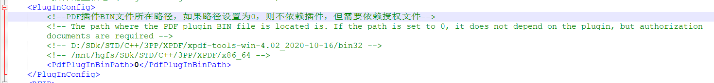
13、执行打印PDF返回“42074113”报错
【错误码含义】：
程序试图使用PDF打印功能，但未能找到相应的插件
【应对措施】：
检查依赖的sdkcfg.xml文件有没有配置好pdf插件路径，需要根据实际存放xpdf文件路径调整;
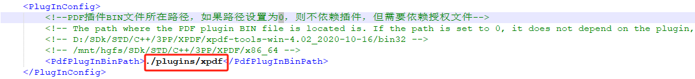
14、执行打印返回“25182210”报错
【错误码含义】：
usb发送数据失败
【应对措施】：
① 请先检查电脑与打印机的通讯是否正常（检查电脑识别打印机是否正常、usb线是否掉了，电脑是否中途关机或重启等情况）；
② 如果有其他软件占用端口收发数据会导致调用发送超时，就会发送数据失败；
③ 如以上步骤都检查过，可重启打印机或再进行操作验证；
④ 如果重启打印机后，该问题还是必现或出现频率很高，可依次按如下步骤进行排查：
► 更换一条usb连接线再进行验证
► 更换另一台电脑再进行验证
15、执行打印返回“25182213”报错
【错误码含义】：
usb接收不到应答数据
【诊断步骤及应对措施】：
① 请先检查usb连接线是否松脱；如是，请重新接牢；
② 请先检查打印机是否被电脑正常识别，见下图；
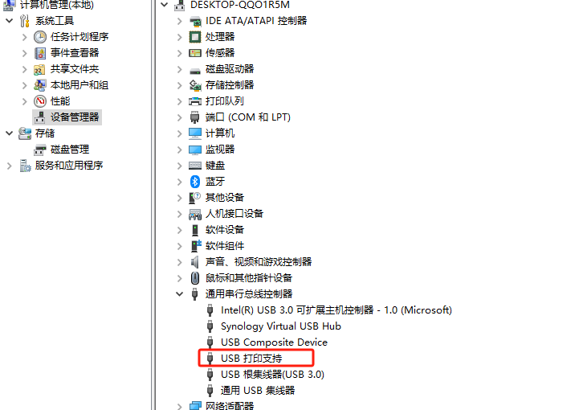
③ 请确认程序是否对一台（RFID功能尚未开启的）RFID打印机调用了RFID相关的读取功能；如是，请先开启打印机的RFID功能，然后重启打印机后再进行验证；
④ 请通过按打印机的按键观察打印机是否有动作进而判断打印机当前是否卡死；
⑤ 请检查打印机当前是否报错；如是，请先消除当前报错，然后再次操作看通讯是否正常；
⑥ 请确认打印机固件与SDK是否适配；此诊断策略适用于以下情况：
► 首次使用SDK与打印机对接开发项目
► 最近升级过打印机固件或SDK版本
如果是读epc/user/tid时返回错误：
① 打印自检页，检查一下该打印机是普通打印机、高频打印机还是RFID超高频打印机，如果是RFID超高频打印机，检查是否没有开启 RFID 的功能；
② RFID标签用软件测试前，是否没有进行RFID标签定位校准（要确保标签定位校准成功：校准成功后，按一下走纸键，走一张标签，且打印自检页，能看到校准后的标签页长是实际标签页长，定位后标签页长有±1mm左右误差都是正常的。）
③ 读写功率或频段设置的不对，可用智能助手修改频段再重新定位检验RFID标签；
④ 观察走纸动作是否异常；是否有卡纸、滑纸或碳带粘住标签等异常动作，导致RFID 标签芯片没有到达打印机读写芯片位；
⑤ 检查标签是否损坏或有无进行过特殊操作，如销毁标签操作等等；
16、执行打印返回“25198597”报错
【错误码含义】：
TCP发送数据失败
【应对措施】：
① 请检查打印机是否已正常开机;
② 请检查打印机与电脑、（与电脑组网的）交换机/路由器的网线是否松脱;
③ 请检查电脑是否能ping通打印机;
④ 请通过telnet PrinterIp 9100命令（PrinterIp为打印机Ip地址）检查打印机的9100端口当前是否可连通;
17、执行打印返回“25198604”报错
【错误码含义】：
未能从TCP接收到打印机的应答数据
【应对措施】：
① 请检查打印机是否已正常开机;
② 请检查打印机与电脑、（与电脑组网的）交换机/路由器的网线是否松脱;
③ 请检查电脑是否能ping通打印机;
④ 请通过telnet PrinterIp 9100命令（PrinterIp为打印机Ip地址）检查打印机的9100端口当前是否可连通;
⑤ 请确认打印机固件与SDK是否适配；此诊断策略适用于以下情况：;
► 首次使用SDK与打印机对接开发项目
► 最近升级过打印机固件或SDK版本
18、执行打印返回“42270720”报错
【错误码含义】：
打印机返回给SDK的状态数据表明打印机当前出错了
【应对措施】：
检查打印机是否处于报错状态，查看打印机面板或指示灯状态（有面板机器会显示错误信息，无面板机器指示灯会亮红灯）。其次，带面板的机器，需要再检查打印机是否处于非打印就绪界面，如果因报错或其它原因导致无法打印，可先取消报错状态或直接重启机器，机器恢复正常状态再继续操作；
19、加载动态库返回“41992207”报错
【错误码含义】：
已有依赖库的程序运行，表明当前已有一个基于libDSThermal.dll或libDSThermal.so的程序正在运行，再多开一个程序导致的报错;
【应对措施】：
原则上同一时间只由一个应用程序独占使用打印机；通过任务管理器查看是否已有DSTP2xDemo.exe、DSTP2xWebPrtServer.exe、DSTP2xDemo.out、DSTP2xWebPrtServer.out或者客户基于libDSThermal.dll或libDSThermal.so开发的程序正在运行，并由客户决定最终让哪个程序运行;
20、客户程序或demo无法运行
① 如出现如下面2张图的报错提示，表明客户程序或demo缺少SDK的依赖库；请将\lib下对应的32/64位目录下的所有文件拷贝到当前程序同级目录下
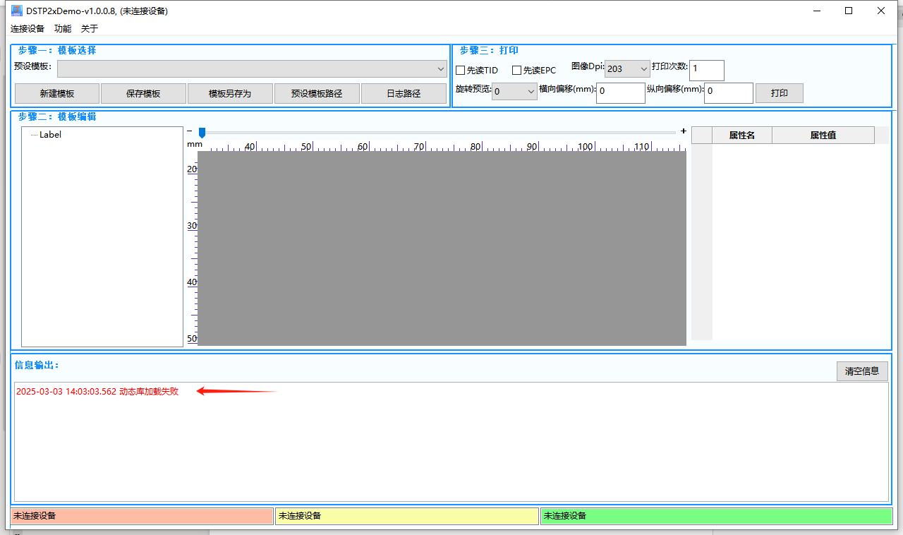
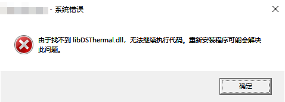
② 如出现下图的报错提示，表明客户程序或demo使用了与之位数不匹配的依赖库。比如客户程序或demo当前位32程序，但缺依赖了64位的库；请确保32位程序正确使用32位依赖库（路径：\lib\Win32），64位程序正确使用64位依赖库（路径：\lib\x64）。
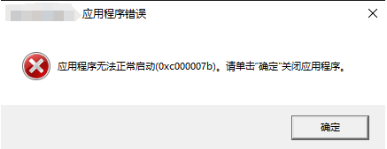
③ 如出现下图的报错提示或者报错提示为“因为计算机中丢失msvcp140.dll”等，表明当前操作系统缺少VC运行时环境；请根据客户程序或demo的位数需要，安装相应位数的vc_redist即可。
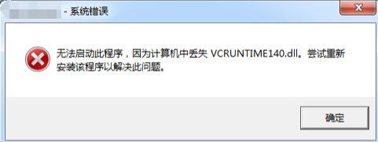
21、DSTP2xWebPrtServer.exe报错“开启服务失败”
检查DSTP2xWebPrtServer服务所需要绑定的9001要端口是否被其他程序占用了，终端输入netstat命令查看端口占用情况，
window系统可以使用命令查看：netstat -ano | findstr "LISTENING"
如9001端口已被占用，显示如下图：
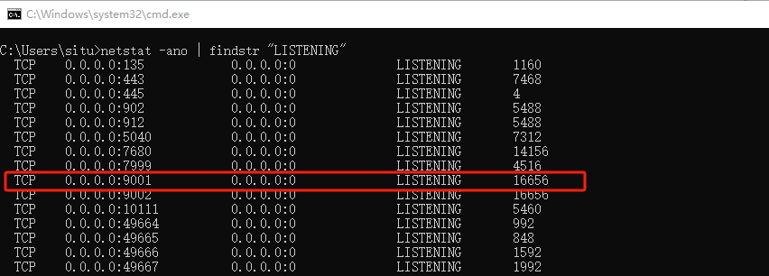
Linux系统可以使用命令查看：sudo netstat -tulnp 如9001端口已被占用，显示如下图：
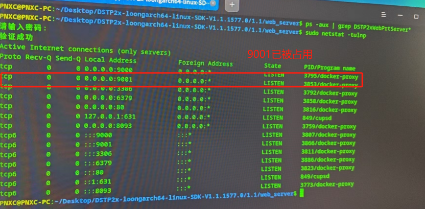
【应对措施】：
修改DSTP2xWebPrtServer服务端口，步骤如下： ①打开\web_server\ServerCfg.ini文件，修改端口号；
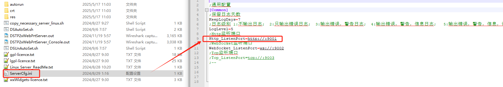
②保存文件； ③重新运行./DSTP2xWebPrtServer.out 注意：修改ServerCfg.ini文件的端口后，如果要运行javascript示例测试，记得同时修改示例文件夹里common.js中的端口号，保持两者一致才能正常连接。
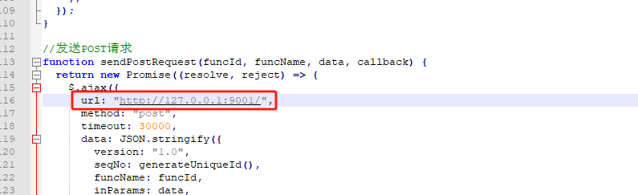
22、设置通讯超时时间建议
对于本SDK的功能接口的通讯超时时间，建议值发送或者接收数据均为3000~5000ms即可；
23、Linux系统下对应架构选择
目前支持x86、arm架构系统，因不同架构底层逻辑有有区别，需要选择对应架构系统的so进行集成；
查看系统架构方法：
Linux系统的桌面上，右键打开终端，输入lscpu确认CPU的架构，具体返回信息如下图所示：
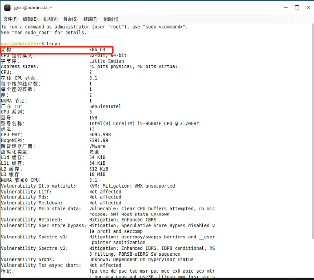
24、Linux系统下查询系统信息
在调试过程中发现无法调用so库或报错等情况时，可以查看系统具体信息进行分析；
常用查询命令：
uname -a
cat /proc/version
cat /etc/os-release
cat /etc/redhat-release
cat /etc/issue
lsb_release -a
可在控制台中一次输出以上指令按回车执行，返回结果如下图所示：
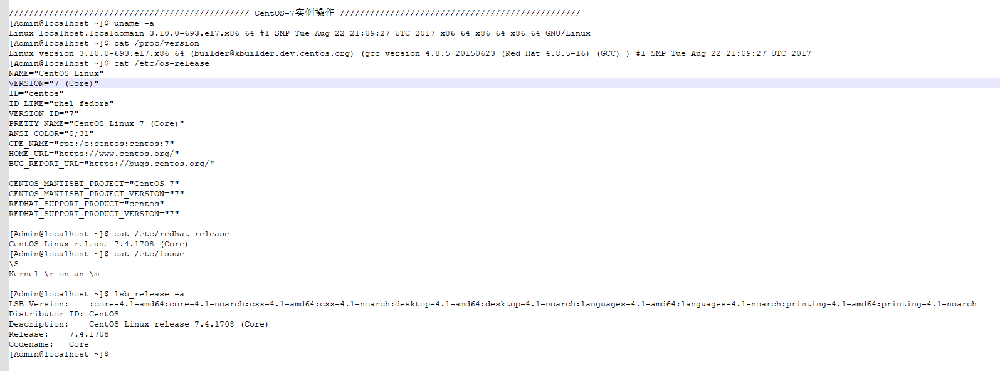
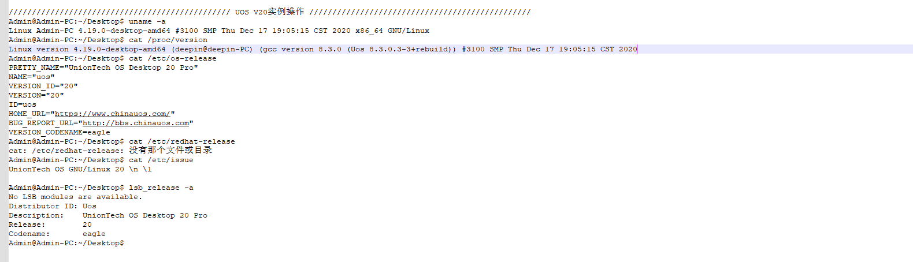
25、Linux系统下需要用root用户或权限运行基于SDK的程序来操控USB连接方式的打印机
SDK包里提供了一个map.ds方案，只需以root用户或权限成功执行一次该方案，后续即可以普通用户或权限运行基于SDK的程序来操控USB连接方式的打印机；
26、Linux系统下打印文本报错
接口调用是依赖于系统字库，但每家Linux系统厂商都会自己定制字体，字体还涉及到版权问题，如果没有字体的话会报错，可以安装相应字体或者使用系统自带的字体进行打印；
在Linux系统传入已安装的字体但会报错无法打印：
因系统差异，检查系统字体看排前的位置是中文还是英文，查出来英文名字在前，web_DSTP2x_LcDraw_SetTextFontName或DSTP2x_LcDraw_SetTextFontName调用参数需要给英文名称，如果是中文则给中文名称；
如下图例子所示，左侧为Centos7系统，显示SimSun在前，需要传“SimSun”右侧是KylinOS系统显示宋体在前，需要传“宋体”；
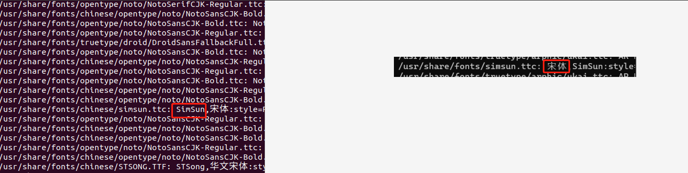
查询字体指令：
终端输入：fc-list
只查一下安装的中文字体：fc-list :lang=zh
27、Linux系统下字体操作流程
①在桌面任意地方右键打开终端；输入sudo chmod 777 -R /usr/share/fonts/kyfonts（“/usr/share/fonts/kyfonts”为需要赋权的目录名称，系统不同路径可能会不同，具体根据实际系统而定，下图系统目录位置在/usr/share/fonts/kingsoft）按回车输入密码（如系统本身为root用户不需要输入密码）给该目录修改权限；（777 -R赋权等级可视实际情况给）
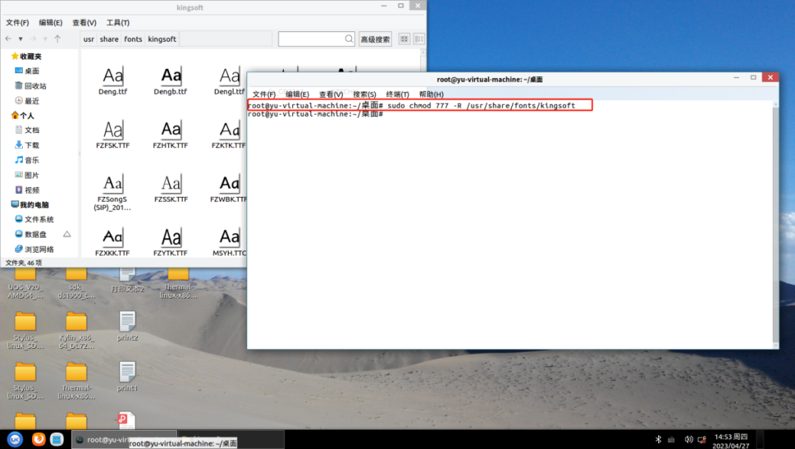
②把字体复制到/usr/share/fonts/kyfonts（“/usr/share/fonts/kyfonts”为你们字体安装的位置，系统不同路径会不同，具体根据实际系统而定，下图系统目录位置在/usr/share/fonts/kingsoft）目录下；
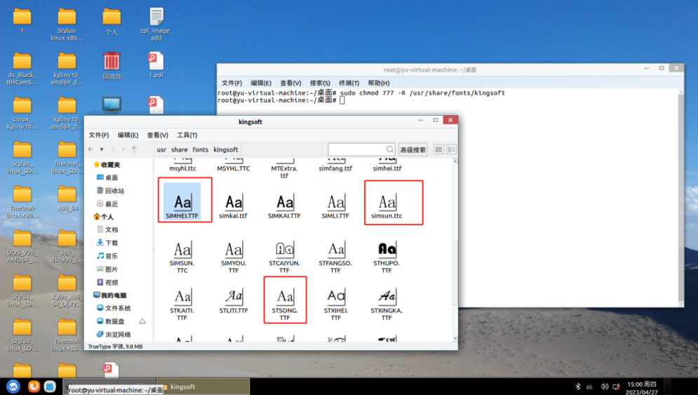
③在/usr/share/fonts/kyfonts（“/usr/share/fonts/kyfonts”为你们字体安装的位置，系统不同路径会不同，具体根据实际系统而定，下图系统目录位置在/usr/share/fonts/kingsoft）目录下右键打开终端
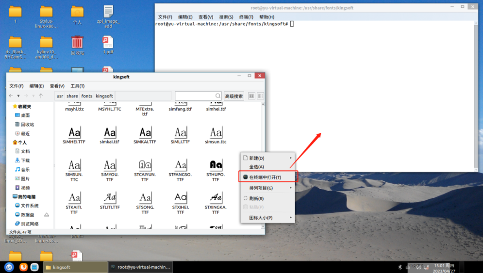
④在终端输入fc-cache按回车，等待安装字体；
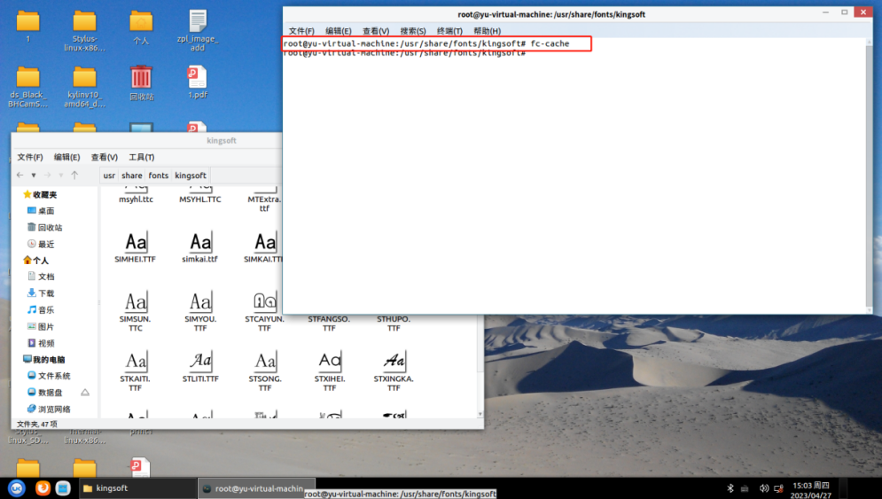
⑤在终端输入fc-list按回车，查看确认字体是否安装成功；
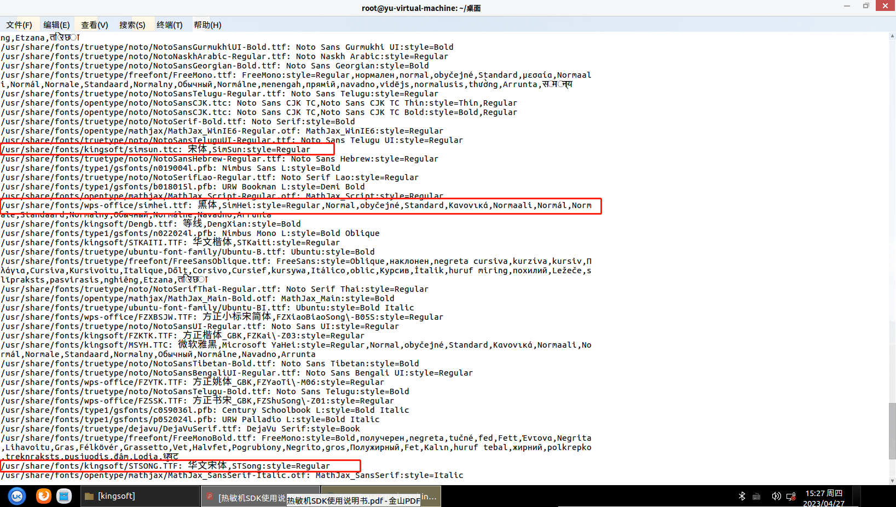
28、EPC或USER数据写入格式
SDK接口支持HexStr方式以及ASCII两种形式写入，具体情况如下：
【ASCII类型】
① 是以一个字符作为一个字节进行数据写入的。
② 输入的数据长度必须为2个字符的整数倍。
③ 支持ASCII码表里面的任一字符数据作为输入。
示例：
输入数据：1234abcd
实际写入标签的（十六进制）数据：31 32 33 34 61 62 63 64
【HexStr类型】
① 是以两个字符作为一个字节进行数据写入的。
② 输入的数据长度必须为4个字符的整数倍。
③ 只支持数字0~9，字母a~f或A~F作为输入。
示例：
输入数据：1234abcd
实际写入标签的（十六进制）数据：12 34 ab cd
【注意事项】
① 由于写入标签的数据都是十六进制数，因此上层应用读取到标签数据后需要根据此前选定的写入数据格式决定是否需要进行相应的格式转换。
② epc/user长度不能超过签芯片规格。例如：标签芯片epc区规格是96bits，那么epc只能写96/8=12字节，超出长度就写不进去；用HexStr能写24个数；ASCII方式只能写12个数。
③ 如果是特殊标签，需要按对应标签规格书要求格式进行写入。
29、读EPC、USER、TID返回的值为“Error!”
【报错含义】：打印机返回的45 72 72 6F 72 21其实是“Error！”的十六进制数据，代表读取epc、user或tid失败。
【诊断步骤及应对措施】：
① 请重新进行RFID标签定位校准再试。
② 请重试该标签的读取操作看能否成功；如果打印机返回的结果仍然是“Error！”，请尝试下一个步骤。
③ 如果有PDA，请使用PDA看看能否成功读到该标签的epc、user或tid；如果打印机返回的结果仍然是“Error！”，当前标签可能已损坏/已销毁，请尝试下一个步骤。
④ 请通过走纸功能过掉当前标签，换下一张标签读取看看是否成功。如果换张标签读取正常，检查是否标签损坏或者其他问题（标签进行是否进行了销毁等其它操作导致）。
⑤ 若已经按以上步骤操作过，打印机仍然返回“Error！”，请重启打印机再进行该读取操作。
30、打印RFID标签会打印“作废”字样
【报错含义】：
对于带epc/user数据的RFID打印操作，当打印过程中打印机无法将epc/user数据写入标签芯片时，打印机会在当前标签上打印“作废”字样；然后转到下一张标签进行补打，如果连续三次补打依旧失败，打印机将报错并停止工作；
【诊断步骤及应对措施】：
① 请检查标签是否已损坏。
② 请检查标签有没有对标签进行RFID标签定位校准（换不同规格标签/更新升级固件/打印机恢复出厂设置等操作后，都需要重新进行RFID标签定位校准操作）
③ 请检查是否对不带user区的标签执行写user操作。
④ 请检查epc/user数据是否过长。可以查看标签规格书看标签支持多少数据，如果超标签规格，会因写不进去导致打印作废。
⑤ 请检查将要写入的epc/user数据长度是否合法。ASCII类型数据长度必须为2个字符的整数倍，HexStr类型数据长度必须为4个字符的整数倍。
⑥ 使用了普通标签进行打印，无法读写到标签RFID区域；
⑦ 标签协议与机器模块不设配（比如标签的频段对不上，高频协议标签在超高频机器上使用）
⑧ 如果是特殊标签，需要对应标签规格书的要求进行操作；检查标签密码是否定制，还有标签epc/user数据长度写入规则是否不一样。
31、关于锁定标签的注意事项
① 锁定/解锁操作均须在打印前调用执行。
② 如需已修改过密码，后续写入epc、user时都需要带新密码进行操作，否则打印机会因无法写入而打印作废及执行补打；
32、微软、UC、QQ、edge、谷歌、猎豹等浏览器跨域问题
【报错原因】：
目前server服务已支持对浏览器发起跨域请求，但如果出现谷歌浏览器上返回跨错误时，由于谷歌98版本之后，网站对私有服务发出请求前，浏览器都会自动发出一个“预检请求”，如果服务不认识预检请求，就不会正确返回，浏览器便会拦截所有预检请求不通过的请求。同时报跨域的错误；
【处理措施】：
因为是浏览器拦截了数据包的请求；该跨域问题在于浏览器本身，新版本的谷歌浏览器就需要进入浏览器在地址栏输入：chrome://flags/#block-insecure-private-network-requests 回车访问
搜索Block insecure private network requests，将其设置为Disabled后重启浏览器运行才能解决；
33、Linux系统编辑模板快捷方式
因系统差异，使用时会有快捷键操作的差异，如下图所示x86架构下kylin系统不支持Alt移动模板，不支持shift+Alt选择表格元素；
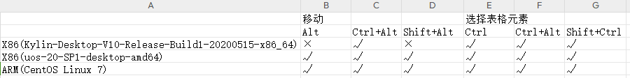
34、编辑模板表格注意事项
①同样表格内单元格与非表格元素之间不允许进行合并单元格操作，比如选择文字跟单元格合并会提示下图报错；
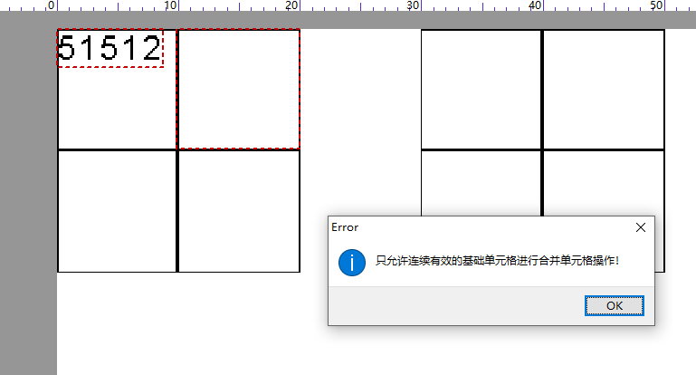
②同一表格内相邻的基础单元格不允许进行合并单元格操作，比如0-0单元格可以与0-1单元格、1-0单元格合并但不可以0-0单元格与0-2单元格或0-3单元格合并，点击合并会提示下图报错；
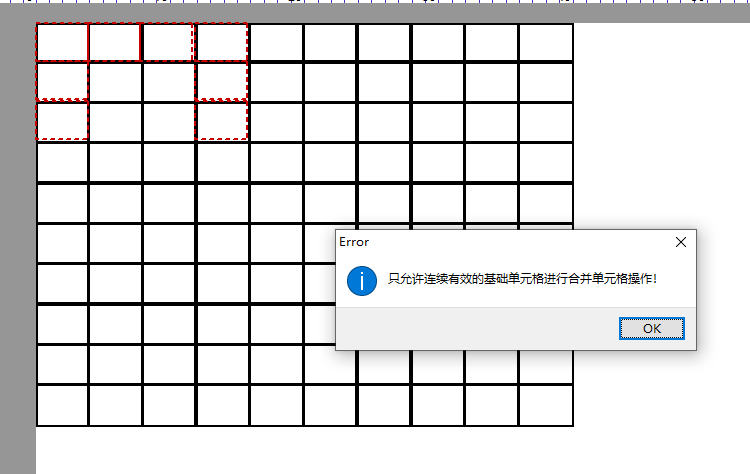
③同一表格内不相邻的基础单元格之间不允许进行合并单元格操作，比如0-0单元格想与1-1单元格合并，点击合并会提示下图报错；
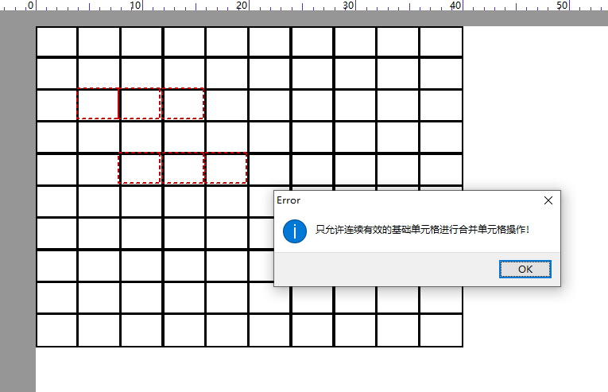
④两个不同表格的基础单元格之间不允许进行合并单元格操作，比如table-01表格0-0单元格想与table-02表格0-1单元格进行合并，点击合并会提示下图报错；
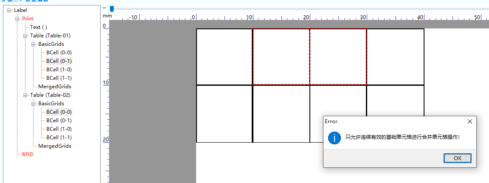
35、Linux环境USB数据抓取
Linux：
usbmon 抓取 USB 总线上通信的数据，方法如下：
1.检查内核是否支持debugfs文件系统
cat /proc/filesystems | grep debugfs
nodev debugfs
2.挂载debugfs文件系统
sudo mount -t debugfs none_debugs /sys/kernel/debug
none_debugs already mounted or /sys/kernel/debug busy
3.确认内核是否支持usbmon模块
sudo ls /sys/module/usbmon
无法访问'/sys/module/usbmon': 没有那个文件或目录
4.安装usbmon模块
sudo modprobe usbmon
再查看sudo ls /sys/module/usbmon
coresize holders initsize initstate notes refcnt sections srcversion taint uevent
5.查看当前总线编号
sudo ls /sys/kernel/debug/usb/usbmon
0s 0u 1s 1t 1u 2s 2t 2u
6.查看当前usb设备信息
sudo cat /sys/kernel/debug/usb/devices
T: Bus=01 Lev=00 Prnt=00 Port=00 Cnt=00 Dev#= 1 Spd=480 MxCh= 6
B: Alloc= 0/800 us ( 0%), #Int= 0, #Iso= 0
D: Ver= 2.00 Cls=09(hub ) Sub=00 Prot=00 MxPS=64 #Cfgs= 1
P: Vendor=1d6b ProdID=0002 Rev= 5.04
S: Manufacturer=Linux 5.4.18-27-generic ehci_hcd
S: Product=EHCI Host Controller
S: SerialNumber=0000:02:03.0
C:* #Ifs= 1 Cfg#= 1 Atr=e0 MxPwr= 0mA
I:* If#= 0 Alt= 0 #EPs= 1 Cls=09(hub ) Sub=00 Prot=00 Driver=hub
E: Ad=81(I) Atr=03(Int.) MxPS= 4 Ivl=256ms
T: Bus=02 Lev=00 Prnt=00 Port=00 Cnt=00 Dev#= 1 Spd=12 MxCh= 2
B: Alloc= 17/900 us ( 2%), #Int= 1, #Iso= 0
D: Ver= 1.10 Cls=09(hub ) Sub=00 Prot=00 MxPS=64 #Cfgs= 1
P: Vendor=1d6b ProdID=0001 Rev= 5.04
S: Manufacturer=Linux 5.4.18-27-generic uhci_hcd
S: Product=UHCI Host Controller
S: SerialNumber=0000:02:00.0
C:* #Ifs= 1 Cfg#= 1 Atr=e0 MxPwr= 0mA
I:* If#= 0 Alt= 0 #EPs= 1 Cls=09(hub ) Sub=00 Prot=00 Driver=hub
E: Ad=81(I) Atr=03(Int.) MxPS= 2 Ivl=255ms
T: Bus=02 Lev=01 Prnt=01 Port=00 Cnt=01 Dev#= 2 Spd=12 MxCh= 0
D: Ver= 1.10 Cls=00(>ifc ) Sub=00 Prot=00 MxPS= 8 #Cfgs= 1
P: Vendor=0e0f ProdID=0003 Rev= 1.03
S: Manufacturer=VMware
S: Product=VMware Virtual USB Mouse
C:* #Ifs= 1 Cfg#= 1 Atr=c0 MxPwr= 0mA
I:* If#= 0 Alt= 0 #EPs= 1 Cls=03(HID ) Sub=01 Prot=02 Driver=usbhid
E: Ad=81(I) Atr=03(Int.) MxPS= 8 Ivl=1ms
T: Bus=02 Lev=01 Prnt=01 Port=01 Cnt=02 Dev#= 3 Spd=12 MxCh= 7
D: Ver= 1.10 Cls=09(hub ) Sub=00 Prot=00 MxPS= 8 #Cfgs= 1
P: Vendor=0e0f ProdID=0002 Rev= 1.00
S: Manufacturer=VMware, Inc.
S: Product=VMware Virtual USB Hub
C:* #Ifs= 1 Cfg#= 1 Atr=e0 MxPwr= 0mA
I:* If#= 0 Alt= 0 #EPs= 1 Cls=09(hub ) Sub=00 Prot=00 Driver=hub
E: Ad=81(I) Atr=03(Int.) MxPS= 1 Ivl=255ms
或者
lsusb
Bus 001 Device 001: ID 1d6b:0002 Linux Foundation 2.0 root hub
Bus 002 Device 003: ID 0e0f:0002 VMware, Inc. Virtual USB Hub
Bus 002 Device 002: ID 0e0f:0003 VMware, Inc. Virtual Mouse
Bus 002 Device 001: ID 1d6b:0001 Linux Foundation 1.1 root hub
其中Bus后面的是总线号，Dev#或者Device后面的是设备号
7.开始监听（1号总线上的001号设备）
sudo cat /sys/kernel/debug/usb/usbmon/1u |grep "1:001" > ./1.mon.txt
36、JAVA调用返回“不是UTF-8字符串”
【报错原因】：
打印参数里面有中文字符编码不是utf-8
【应对措施】：
增加System.setProperty()方法，用于设置系统属性，如下图所示：
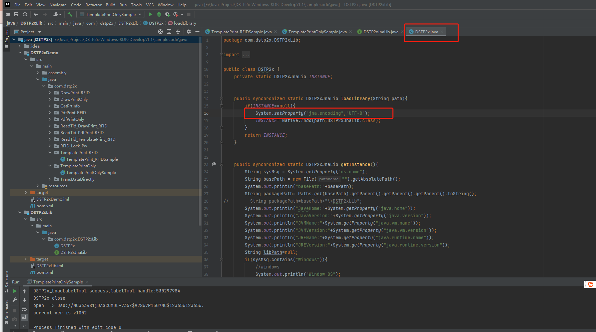